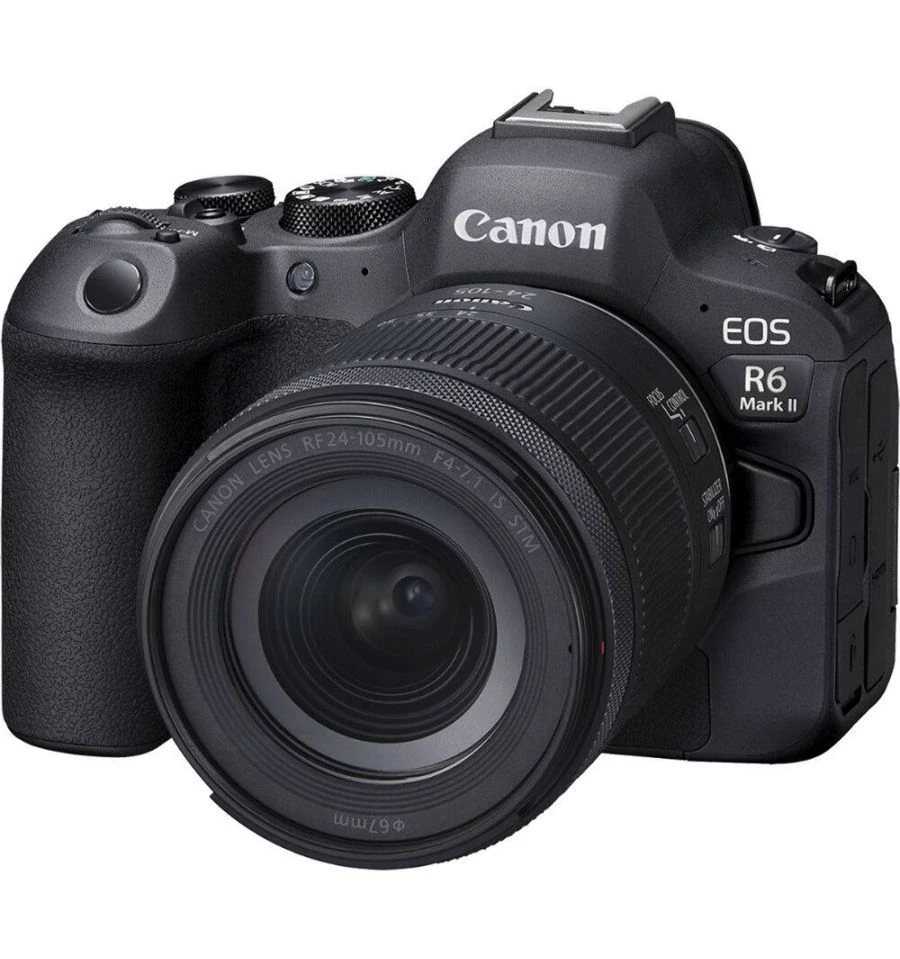
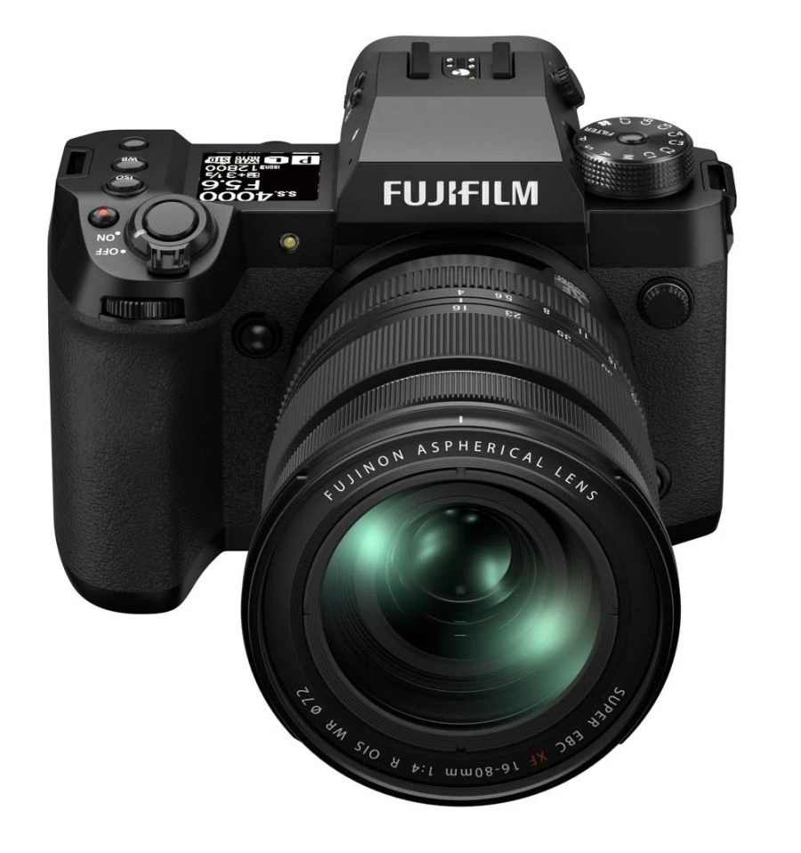
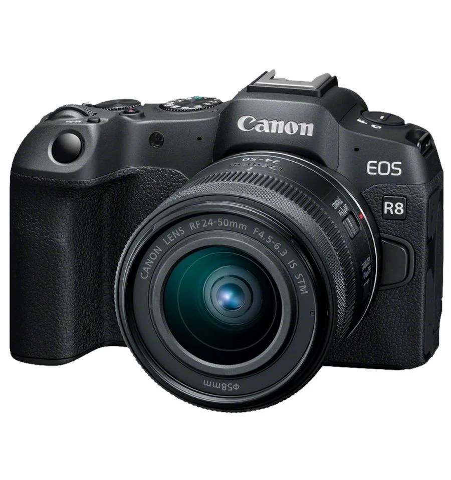
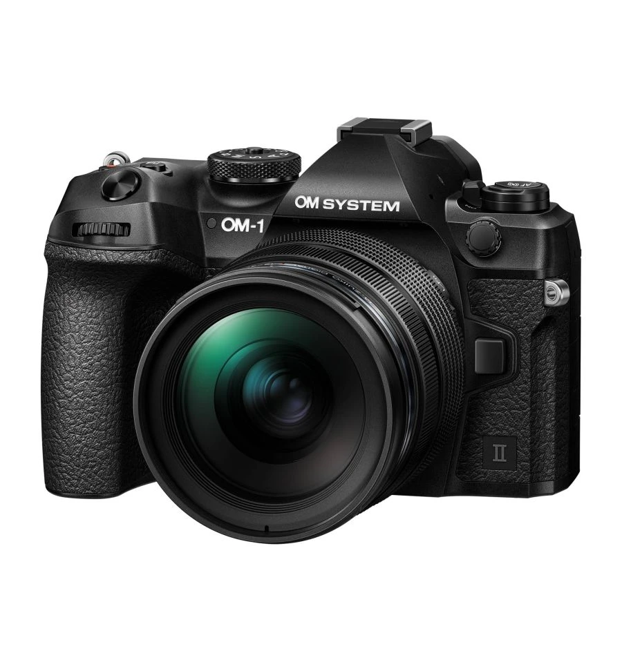

Inspirada en el icónico diseño de la Nikon FM2, esta cámara es ligera y está equipada con un sensor APS-C de 20.9 MP, grabación de vídeo en 4K y conectividad Wi-Fi/Bluetooth.
-10%

Esta cámara compacta y ligera combina la avanzada tecnología de los modelos superiores con una facilidad de uso excepcional.
-30%

El Kit Nikon con objetivo 24-200mm f/4-6.3 VR reúne la potencia de un sensor de 24,5MP con procesador EXPEED 7 y vídeo 6K, junto a un zoom todoterreno estabilizado.
-20%

Nikon Z6 III combina velocidad, precisión y calidad de imagen en un cuerpo híbrido con sensor parcialmente apilado.
-5%

La Full Frame EOS R6 Mark II sube el listón con su combinación única de rendimiento líder en su clase, velocidad asombrosa, estabilidad y funciones de grabación profesional.
-5%

La X-H2 cuenta con el nuevo sensor retroiluminado "X-Trans™ CMOS 5 HR" de 40,2 MP y el "X-Processor 5" de alta velocidad.
-5%

Da el salto a la fotografía y el vídeo Full Frame y haz realidad tus ambiciones creativas con la nueva EOS R8 y el nuevo objetivo ultracompacto 24-50mm IS STM.
-5%

La OM-1 Mark II en kit con el objetivo M.Zuiko 12-40mm f2.8 Pro II cuenta con un rendimiento de alta velocidad increíblemente rápido.
-5%